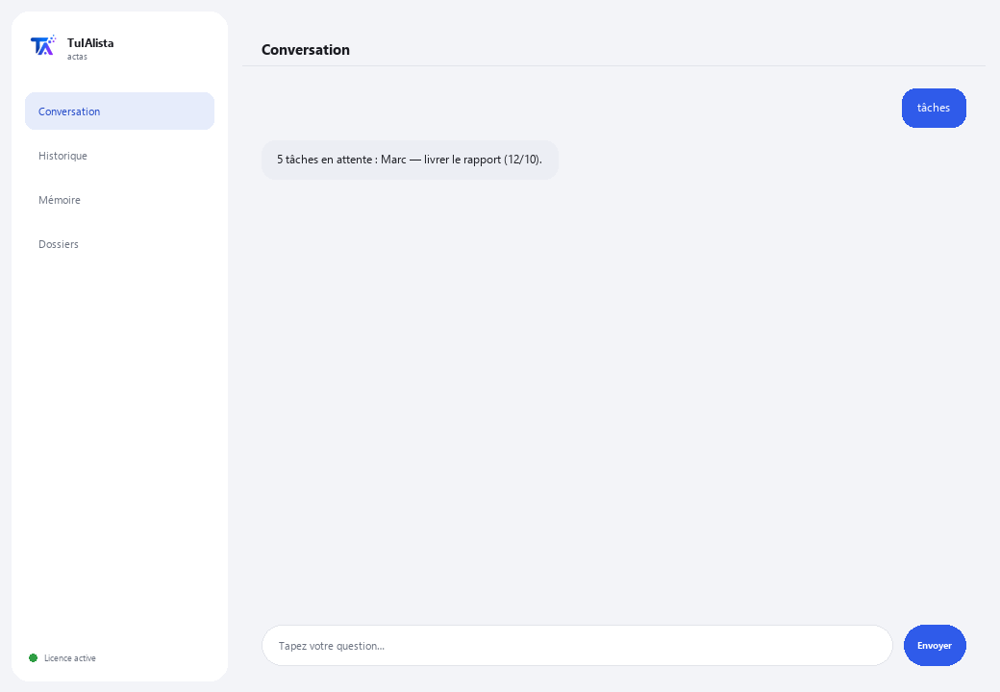

Agent Comptes-rendus et réunions
Transforme vos notes de réunion en comptes-rendus clairs et extrait automatiquement les décisions et les tâches.
Que résout-il et de quoi avez-vous besoin ?
Dans presque toutes les réunions, des choses se décident et des tâches se répartissent, mais ensuite personne n'écrit de compte-rendu ordonné et les décisions se perdent. Cet agent lit vos notes ou transcriptions et prépare le compte-rendu, extrait les tâches avec responsable et date, et détecte quelles tâches de réunions passées pourraient être en train de tomber dans l'oubli.
- Vous avez besoin de : votre clé de licence (TIA-XXXX-XXXX-XXXX-XXXX) et du dossier contenant vos notes de réunion. Ni Python ni connaissances techniques.
- Premier résultat en moins de 5 minutes : vous installez, activez, choisissez votre dossier et lancez compte-rendu <fichier> pour votre premier compte-rendu prêt.
- Vos notes ne quittent jamais votre ordinateur — la lecture s'exécute localement.
soporte@tuialista.com ou visitez tuialista.com/soporte — nous répondons généralement le jour même.1 Ce que fait cet agent
Vous lui indiquez le dossier contenant vos notes ou transcriptions de réunion et il :
- Les lit toutes (texte, Markdown, Word et PDF), sans que vous ayez à les ouvrir.
- Génère un compte-rendu structuré : titre, date, participants, sujets, décisions et tâches.
- Extrait les tâches et engagements avec leur responsable et leur date limite lorsqu'ils apparaissent.
- Sépare clairement les décisions déjà prises des tâches futures.
- Consolide les tâches de toutes les réunions et détecte le suivi : tâches passées qui pourraient rester ouvertes.
- Répond à vos questions sur ce qui a été dit : “qu'a-t-on décidé sur le budget ?”
Résultat : vous sortez de chaque réunion avec un compte-rendu prêt et une liste de tâches claire, sans y consacrer de temps à l'écrire.
2 Installation (2 minutes)
Pour Windows. Pas besoin d'internet permanent ni de rien envoyer sur le cloud.
Téléchargez l'installateur depuis tuialista.com/descargar (agent Comptes-rendus) et ouvrez-le. Il crée un raccourci sur votre bureau avec le logo — pas besoin de Python ni de terminal.
Double-cliquez sur la nouvelle icône. Collez votre clé de licence (reçue par e-mail à l'achat) et cliquez sur Activer. Une coche verte apparaît quand elle est valide.
Sélectionnez le dossier contenant vos notes de réunion et cliquez sur Commencer à utiliser l'agent. La prochaine fois, il démarre directement — il se souvient de votre clé et de votre dossier.
3 Comment l'utiliser
L'agent ouvre une fenêtre de discussion, comme une app de messagerie — pas un écran noir de programmeur. Vous écrivez votre commande ou votre question dans le champ de texte en bas, cliquez sur Envoyer (ou Entrée), et la réponse apparaît comme un message, exactement comme sur cette image réelle :

Les commandes suivantes sont les mots que vous pouvez écrire dans ce même champ de texte :
> compte-rendu <fichier>Compte-rendu structuré de cette réunion : titre, date, participants, sujets traités, décisions, tâches (avec responsable et date limite) et prochaines étapes.
> tâchesConsolide les tâches de toutes les réunions indexées, classées par date limite.
> décisions <fichier>Seulement les décisions/accords concrets d'une réunion, sans les tâches futures.
> suiviTâches de réunions passées qui pourraient rester ouvertes (sans date ou avec une date échue), pour que rien ne tombe dans l'oubli.
> résumé <fichier>Résumé exécutif court (max. ~150 mots) pour qui n'a pas assisté : ce qui a été discuté, ce qui a été décidé et les prochaines actions.
> question libre ?Écrivez votre question et l'agent cherche dans l'historique des réunions, ex. : qu'a-t-on décidé sur le lancement de juillet ?
> quitterTermine la session (fonctionne aussi avec exit).
4 Exemples d'usage courant
Compte-rendu prêt à la fin de la réunion
Vous enregistrez vos notes brutes et compte-rendu reunion-du-jour.txt — vous obtenez le compte-rendu structuré à partager avec l'équipe.
Revoir les tâches avant la prochaine réunion
tâches — vous arrivez avec la liste consolidée des engagements et responsables.
Récupérer des tâches en train de se perdre
suivi — détecte ce qui reste de réunions précédentes et est encore ouvert.
Mettre à jour quelqu'un qui était absent
résumé reunion-strategie.docx
5 Questions fréquentes
Mes notes sont-elles envoyées sur internet ?
Ai-je besoin d'internet pour l'utiliser ?
Quels formats accepte-t-il ?
Comment détecte-t-il les tâches et les responsables ?
Comment connaît-il la date de la réunion ?
Dans quelle langue répond-il ?
Lit-il un PDF scanné ?
Puis-je changer le dossier de réunions ?
Les comptes-rendus sont-ils 100 % exacts ?
Conserve-t-il un historique entre les sessions ?
6 Résolution de problèmes
Un .docx ou .pdf ne se lit pas
Affiche “0 réunions indexées”
Affiche “Licence invalide” ou demande de se reconnecter
“Aucun fournisseur d'IA configuré”
Aucune de ces solutions n'a résolu votre problème ? Écrivez-nous directement — nous serons ravis de l'examiner avec vous.
soporte@tuialista.com ou visitez tuialista.com/soporte — nous répondons généralement le jour même.7 Confidentialité
Vos notes de réunion ne quittent jamais votre ordinateur.
- L'agent lit et indexe les fichiers localement, sur votre propre appareil. Il ne les envoie à aucun serveur.
- La détection locale des tâches, dates et participants se produit sur votre machine.
- La seule chose qui transite par internet est : (1) une vérification que votre licence est active — qui n'inclut pas le contenu de vos notes —, et (2) lors de la génération d'un compte-rendu, résumé ou question, un fragment du texte est envoyé au moteur d'IA pour rédiger la réponse.